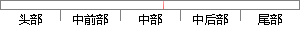

phoneNum, 'mobile') ////手机号码验证
片段位置图

相似结果|
相似片段 1：][0-9]\d{4,8}$/;// 非空验证if ("" === phoneNum){alert("手机号码不能为空！");// 手机号码合法性验证} else if (!regPhoneNum.test(phoneNum)) {alert("手机号码格式有误！
相似片段 2： PhoneNum() //手机号码验证{var PhoneNum= $('#txtPhone').val();if (Phone == "") { // 首先验证手机号码是否空$("#PhoneTip
相似片段 3：数据格式验证重点50要判断手机号码输入是否合法，关键代码如下：//不符合号码格式过滤 移动if (phoneNum[k].Trim().StartsWith("1"))if (!IsRegEx
相似片段 4：。数据格式验证重点要49判断手机号码输入是否合法，关键代码如下：//不符合号码格式过滤 移动if (phoneNum[k].Trim().StartsWith("1"))if (!IsRegEx
相似片段 5：手机发送验证码短信，用户收到短信后填写用户短信中的验证码，调用 SMSSDK.submitVerificationCode("86", phoneNum,vcode)方法验证手机号码的真实性
相似片段 6：可信手机号码发送验证信息的数据包。图3．17截获的验证码数据包b．验证码验证成功后可以批量更改手机号码实现恶意注册。图3-18修改phoneNum值c．通过修改phoneNum的值为
相似片段 7：的号码，并且要符合手机号码的要求。下面的代码段就是用来实现对用户手机号码合法性进行验证的。／／该字符串为验证号码为手机号码的正字表达式NSString·MOBILE=@”^1(310-9]15
|
※ 片段修改建议 ※
近似词参考：